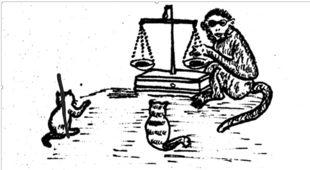

HESHIS DARO

Habeen ayaa labo bisadood/mukulaalood u soo dhaceen guri, ka dibna waxa ay ka xadeen hilib badan.
Labadii bisadood hilibkii ayey ku dagaaleen iyada oo mid waliba ay doonaysay innay hilibka ka badsato tan kale.
Heshiis la’aantaasi waxa ay keentay innay dagaalaan oo ay is xagxagtaan.
Waa ay iska la daaleen isxagxashadii ilaa dhaawacyo ay wajiyada iska gaarsiiyaan.
Markii ay dagaalkii ka daaleen ayaa mid ka mid ah bisadiihii u soo jeedisay tii kale ”
Naa waa taan isku dhimanaye aan u tagno garsoore si uu hilibka si cadaalad ah noogu kala qeybiyo”.
Bisadii kale taladii ayey ku raacday oo waxa ay tiri noo gee daanyeer si uu hilibka si cadaalad ah noogu qeybio.
Daanyeerkii ayey u yimaadeen.
Hilibkii ayey hor dhiggeen; si uu si isla eg/siman ugu qeybio.
Daanyeerkii waxa uu soo qaatay mindi iyo miisaan.
Hilibkii buu laba u qeybshey.
Qebba kafad/dhinac ayuu ayuu miisaankii ka saaray.
Kolba dhici cuslaada ayaa cad ka soo jara oo uu cunaa ilaa uu hilibkii ay bisaduhu u keeneen dhamaantiis uu ku cunnay.
Markaas ayuu labadii bisadood ku yiri : ”
Sidaas bay midkiinaba qeyb helin”.
waxa aya ahaayen koox.
Hilibkii ayey hor dhiggeen; si uu si isla eg/siman ugu qeybio.
Daanyeerkii waxa uu soo qaatay mindi iyo miisaan.
Hilibkii buu laba u qeybshey.
Qebba kafad/dhinac ayuu ayuu miisaankii ka saaray.
Kolba dhici cuslaada ayaa cad ka soo jara oo uu cunaa ilaa uu hilibkii ay bisaduhu u keeneen
dhamaantiis uu ku cunnay. Markaas ayuu labadii bisadood ku yiri : ”
Sidaas bay midkiinaba qeyb helin”.